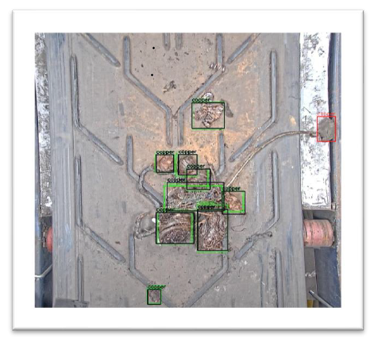
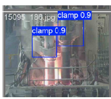
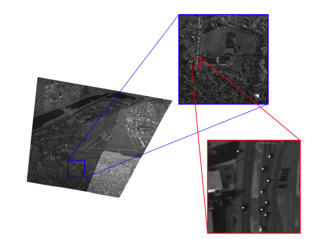
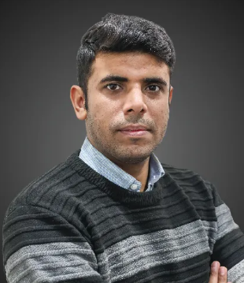

Selected Projects



Hello, I'm
Assistant Professor at BNU
Researcher at Scuola Superiore Sant'Anna

I am a Computer Vision researcher working as a research fellow at Sant'Anna School of Advanced Studies since September 2024, and as an Assistant Professor at the Department of Computer Science, Beaconhouse National University, where I teach courses such as Computer Vision and lead Research and Development in Computer Vision and AI in manufacturing.
I completed my PhD in Computer Science at the University of Pisa, Italy, mainly funded by the prestigious Marie Curie PhD fellowship in EVOCATION ITN at the Visual Computing Lab.
I have worked across a diverse spectrum of Computer Vision, from object detection and tracking to multi-view 3D reconstruction. During my PhD I developed MoReLab for image-based interactive 3D modeling. Currently I work on automatic detection and removal of unwanted objects from large amounts of steel scrap, and on AI for safer, more efficient steel production.
Focus: Computer Vision & AI in Manufacturing
I would love to hear from you if you have an interesting research idea, teaching collaboration, or industrial Computer Vision project.
April 2021 – January 2025
Thesis: Enhancing 3D reconstructions through user interactions
Supervisors: Dr. Francesco Banterle and Dr. Massimiliano Corsini
August 2018 – July 2020
Thesis: Trajectory Estimation of vehicles in CCTV data stream
Supervisor: Dr. Ilya Afanasyev
September 2014 – July 2018
Thesis: Design and Implementation of 50kV DC Power Supply
Supervisor: Dr. Sidra Farid
September 2024 – Present
Working on research projects for sustainable and efficient steel production:
June 2025 – Present
Teaching:
Supervising an undergraduate FYP and coursework projects for Computer Vision.
October 2023 – August 2024
Extended MoReLab and conducted a comprehensive user study leading to a publication in IEEE Access.
March 2021 – August 2023
Developed MoReLab, a PyQt GUI for user-assisted 3D reconstruction with manual features, bundle adjustment, primitive shape tools, and 3D measurement.
Urdu
English — IELTS 7.5 overall (Reading 9.0)
Italian
You can also find these articles on my Google Scholar profile.



Feel free to contact me anytime by email — happy to discuss research collaborations, teaching, or industrial Computer Vision projects.